Las ruinas de Lordaeron es una mazmorra instanciada en el exterior como Shadow Fang Keep, Zul´farrak, Monasterio Escarlata y Stratholme entre otras.
Tiene forma de "U" y podriamos dividirla en la sección interna y externa pese a que estan interconectadas por pasajes o derrumbamientos.
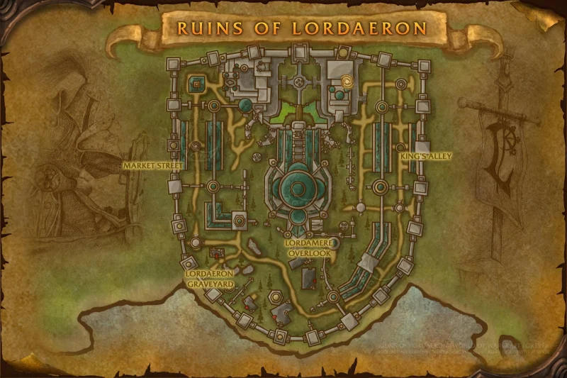
La entrada a la istancia esta situada en la ala este de las ruinas, no hay gran cosa a parte de arañas y escombros. A la izquierda de la entrada encontraras a Captain Truman, que te entregara una mision si eres de la alianza, sino sera hostil.
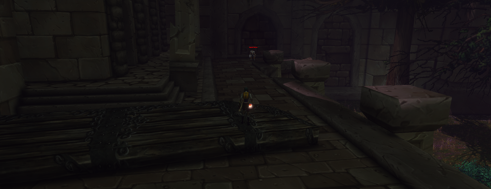
Desde este punto hay dos rutas, o bien sigues el camino que va al sur, o te cuelas en callejón por un segmento del muro destrozado.
Nosotros tomaremos la ruta a traves del muro hacia las donde estan las arañas.
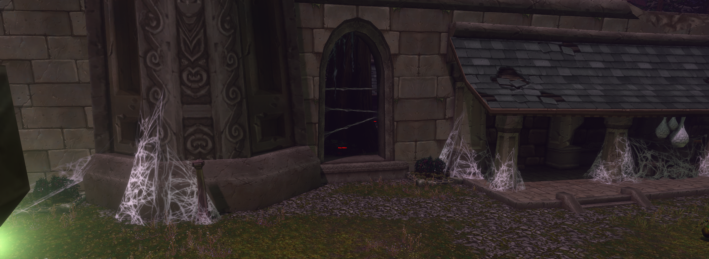
Una vez dentro del callejón empezaremos a limpiar las arañas de dentro de uno de los dos lados, teniendo especial cuidado de evitar a Whitherfang que patrulla de norte a sur.
Una vez sea seguro iniciaremos el primer encuentro con Whiterfang , lo cual deberia ser relativamente sencillo.
Tras limpiar el primer encuentro nos colaremos en el primer pasaje hacia el circulo interior donde hay una torre, allí en la cima, recojeremos un objeto que inicia una quest secreta para ambas facciones.
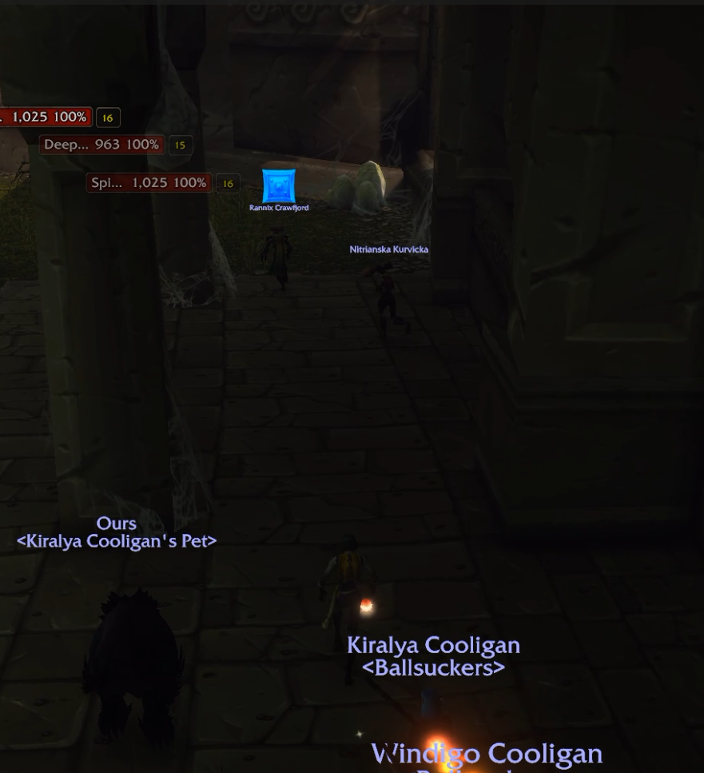
Este tiene varias ubicaciones por lo que no siempre esta ahí, para recogerlo a la primera.
Si continuas hacia el sur por el lado interno, te encontraras a The Baron , nuestro segundo encuentro en esta guia.
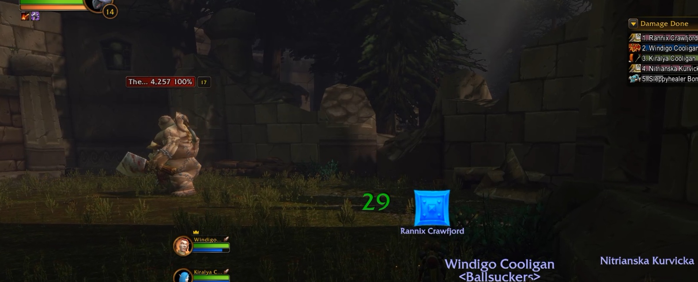
Tras derrotar a The Baron nos subiremos por una columna rota al muro, al otro lado hay un arbol caido entre dos edificios, si sigues el arbol no deberias tener que limpiar nada a tu camino hacia donde se encuentra Victor the Vile , aunque es aconsejable limpiar primero un grupo de ghouls que bloquean la entrada hacia el mercado, donde nos espera el siguiente jefe.
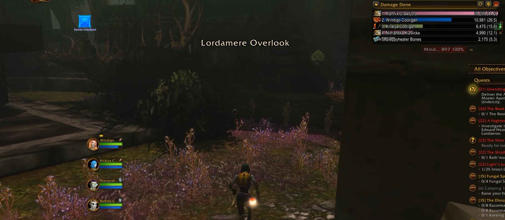
Si no has tenido suerte en la primera torre, nada mas saltar al otro lado del muro, no sigas al arbol, en su lugar dirigete al norte siguiendo el muro, al final hay una brecha que lleva a la cripta, esta está custodiada por un par de arañas, justo en la entrada entre las dos arañas, es otro posible lugar de aparicion.
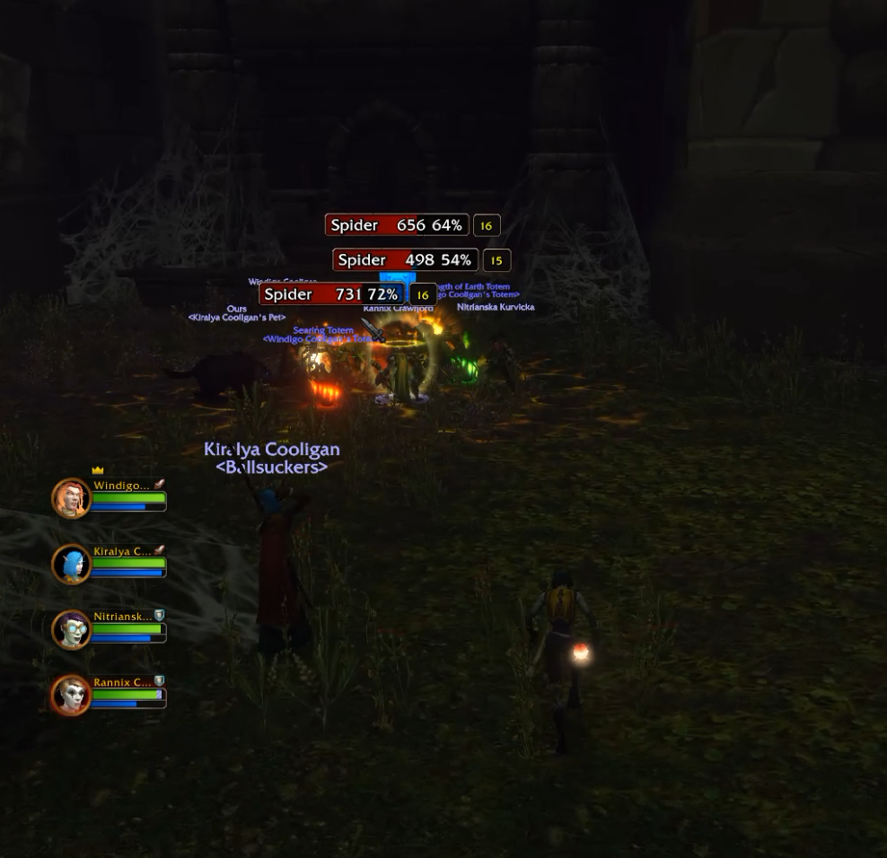
El combate consta de 5 oledas y solo podras intentarlo una vez, ya que es opcional, asegurate de que todo el grupo este preparado antes de activar el evento en la chimena en uno de los edificios.
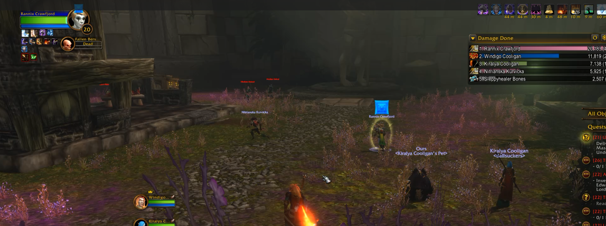
Una vez entres en el mercado, la estatua que hay al fondo activara tres oleadas de mobs, tras lo cual The Abandoned aparecera y os atacara directamente como la cuarta ola. Este evento tampoco es repetible.
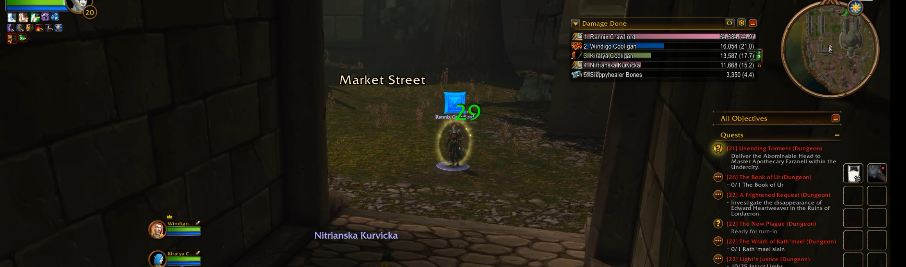
Desde la plaza podremos acceder a la torre que puede contener la cresta.
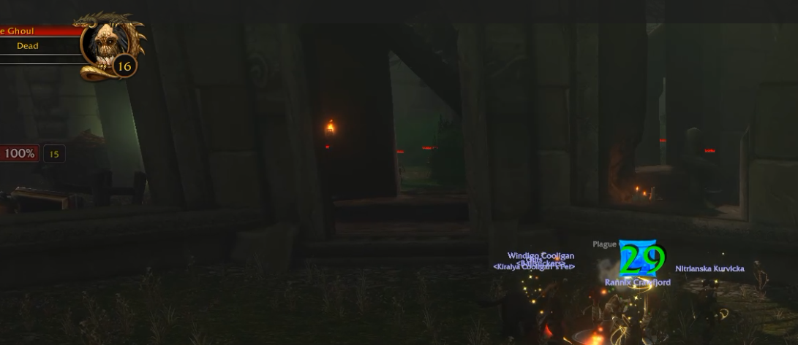
Desde la plaza atravesaremos el arco de piedra que da al norte.
Desde aqui puedes seguir el muro por la derecha hacia Rath´mael o seguir recto hacia el norte hasta Bjork.
En esta guia primero limpiamos el camino hasta Bjork que patruya el mausoleo y una de las torres, donde puede aparecer el objeto necesario para iniciar Crest of Lordaeron.
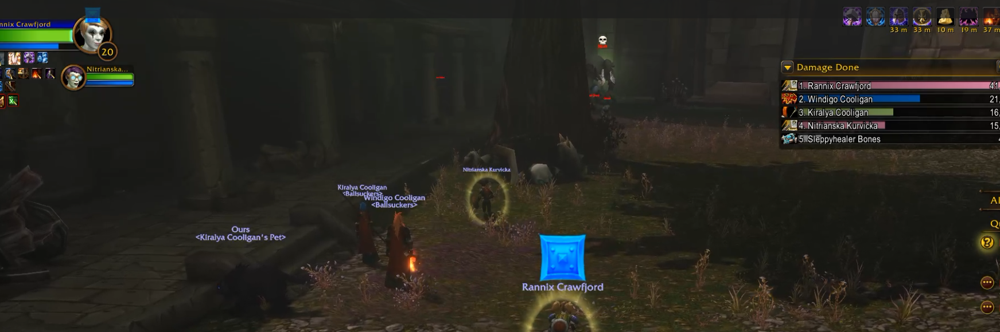
Una vez derrotemos a Bjork. solo queda dirigirnos de vuelta al sur, al lado del muro que delimita la plaza, por el lado izquierdo hay un arco de piedra con un murito.
Si todavia no has tenido suerte con la cresta, comprueba la pared exterior que da al norte del mausoleo que vigila Bjork asi como la torre mas hacia el este, no muy lejos de allí. Al contrario que las demas el objeto esta en el primer piso.
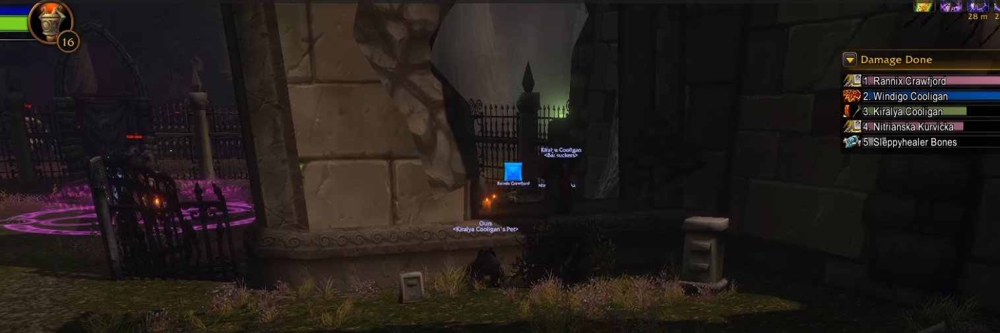
Una vez pasado el murito es posible iniciar el encuetro final con Rath´mael. sin tener que limpiar el grupo de ghouls que lo preceden.
El encuentro en si deberia ser facil de superar si no os quedais dentro del area mucho tiempo
Hasta aquí la guía de Ruins of Lordaeron.